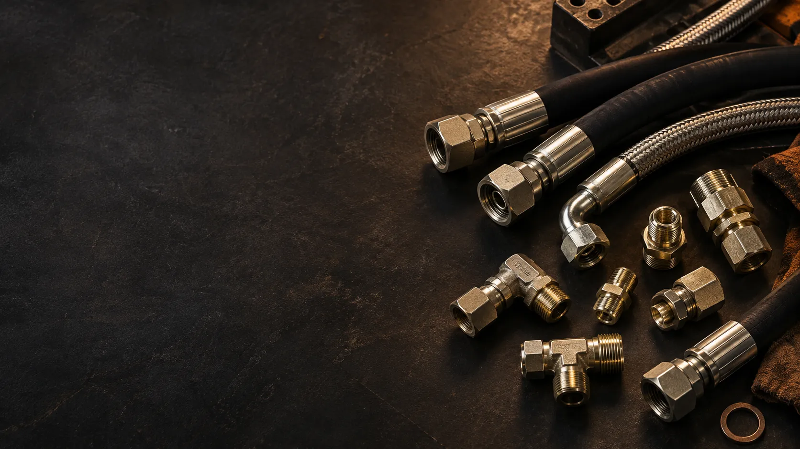
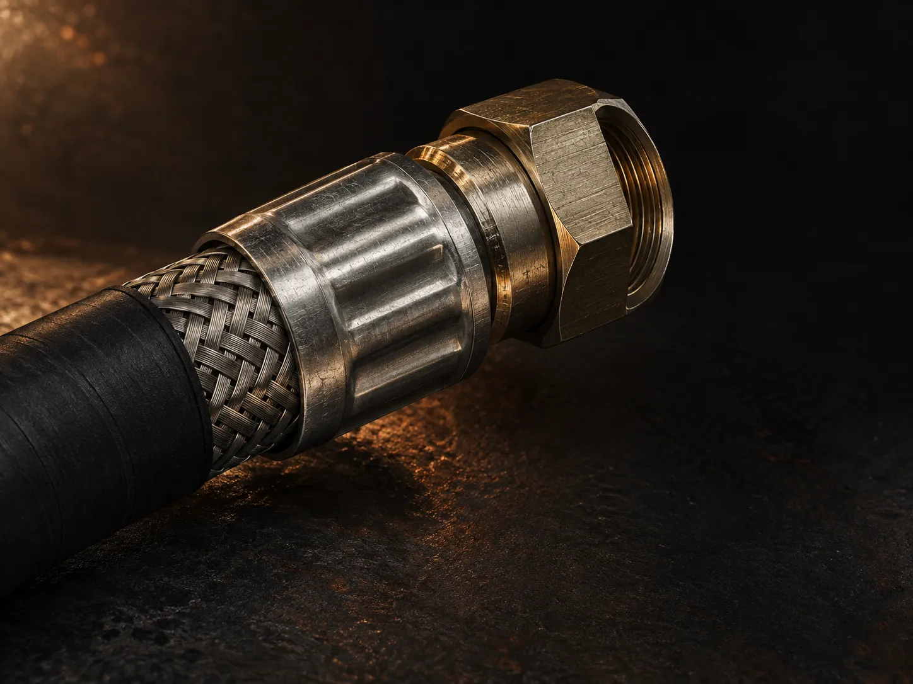
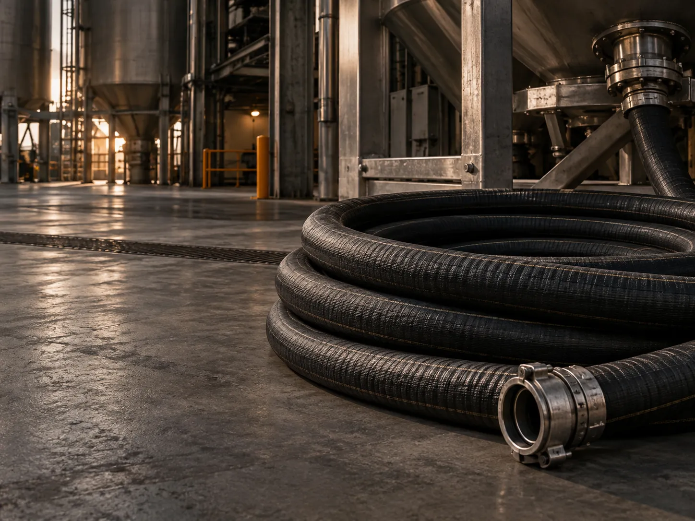
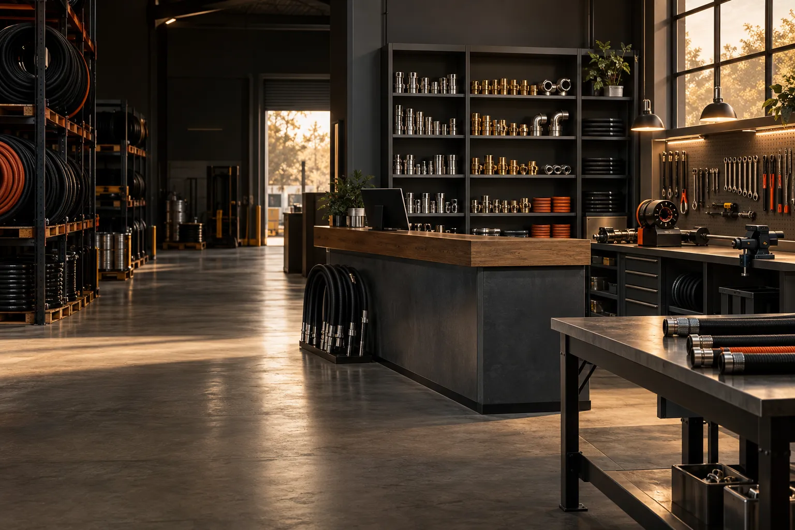
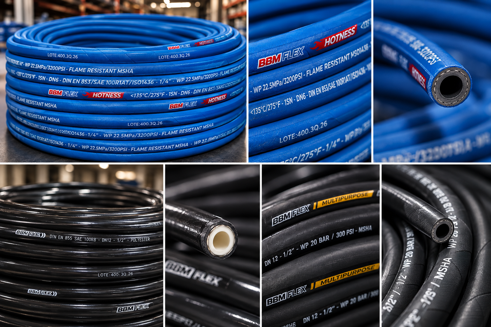
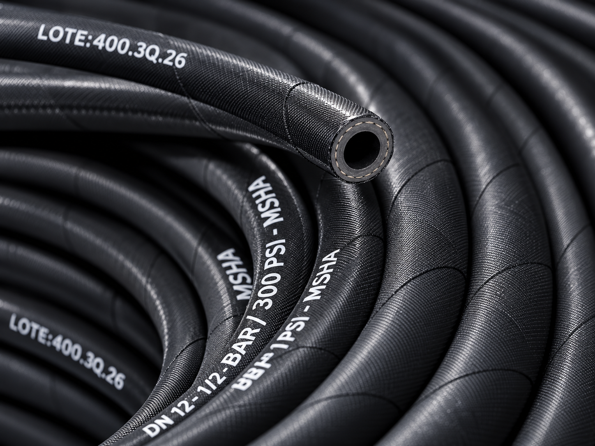
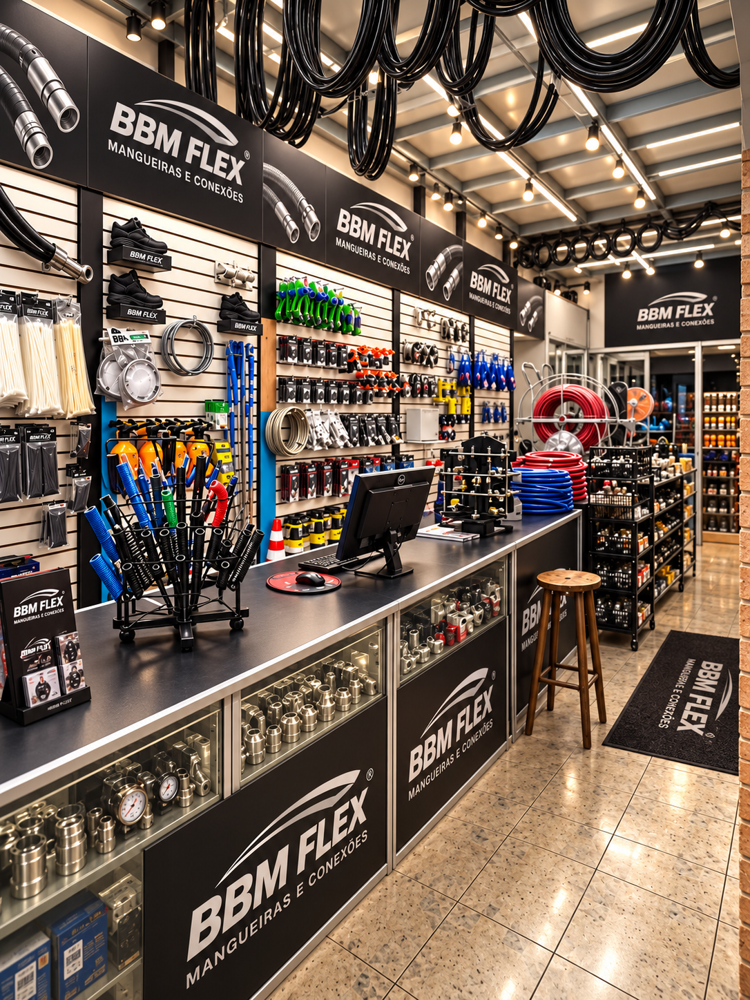

Orientação especializada
Ajuda para especificar diâmetro, pressão, rosca e aplicação.
Conjuntos hidráulicos de alta pressão, conexões e componentes selecionados para a aplicação certa.
Escolha por aplicação
antes de escolher por peça.
Da escolha do tubo à montagem do terminal, cada detalhe precisa conversar com a pressão, a temperatura, o fluido e o raio de curvatura da sua aplicação.
Ajuda para especificar diâmetro, pressão, rosca e aplicação.
Linhas prioritárias disponíveis para reduzir o tempo parado.
Materiais e padrões técnicos para aplicações profissionais.
Envie sua necessidade e fale diretamente com a equipe.
Produtos selecionados para hidráulica, indústria, pneumática e manutenção.




Conjuntos de 1 a 4 tramas de aço para sistemas hidrostáticos críticos.
Engates, flanges e conexões BSP, NPT, JIC e métricas para montagem estanque.
Água, ar, químicos, vapor, combustíveis e abrasivos.
Tubos PU, nylon, engates instantâneos e reguladores para automação.
Abraçadeiras, capas, protetores espirais e componentes de segurança.

Da escolha do tubo à prensagem do terminal, cada detalhe precisa ser compatível com pressão, temperatura, fluido e raio de curvatura.

Quando a aplicação exige sucção, descarga contínua ou resistência à abrasão, a especificação correta protege a operação e aumenta a vida útil do conjunto.
Conte o que sua operação precisa transportar, controlar ou movimentar.
Prensas, linhas de produção e manutenção.
Tratores, colheitadeiras e irrigação.
Escavadeiras, perfuratrizes e concreto.
Frotas, basculantes e freio a ar.
Abrasão, poeira e operação contínua.
Reposição, identificação e urgência.

A Loja da Mangueira combina atendimento comercial, orientação técnica e uma linha de componentes para ajudar sua equipe a encontrar a solução adequada.
Envie uma foto ou a especificação da sua aplicação. Nossa equipe ajuda a identificar o conjunto adequado.
Enviar mensagemAtendimento técnico e comercial.
Avenida Industrial, 1500